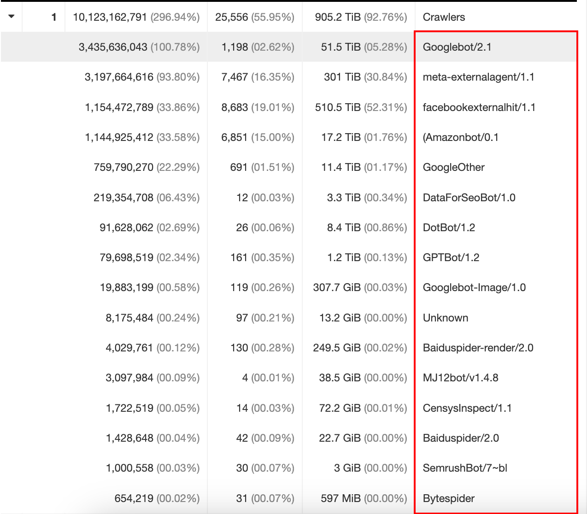
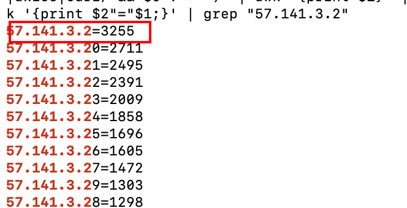

1. 反爬之拉黑癫狂的爬虫
一夜之间网站访问量剧增 1 万多倍达到恐怖的 5 亿是个什么体验
致读者: 点击上方 “雪之梦技术驿站” → 点击右上角“ ... ”→ 点选“设为星标 ★ ” 加上星标，就不会找不到我啦！
1.1. 前言
GoAccess每日独立访客监控到访问异常,具体表现为访客数量基本不变甚至降低的情况下,流量巨增!
507,915,630 除以 37,647 等于 13,491
经过上述计算得知,最终访问量达到 5 亿多,也就是突然急剧增加了 1.4 万倍!
震惊之余,竟然毫无察觉,Uptime Kuma监控中心一直没有异常报警,事故发生时系统正常运行!

1.2. 排查
请求 url 按照点击量排序,定位到频繁请求 url,包括Koala和api项目.
访客 ip 按照点击量排序,定位到美国和爱尔兰爬虫 ip,主要是谷歌爬虫.
操作系统按照点击量排序,定位到谷歌/Facebook/亚马逊爬虫最为突出.
浏览器按照点击量排序,可以得到和操作系统相同的结论.
时间分配按照点击量排序,集中 0-5 点时间段,则旧金山时间(-15h)15 点到 20 点.

推荐网站按照点击量排序,blog 一枝独秀,相比之下,其余的显得微不足,破案了.
地理位置按照点击量排序,北美和欧洲的点击量惊人,都是爬虫的杰作.
1.3. 处理
网站点击量访问异常,瞬间陡增了 1 万多倍达到恐怖的 5 万亿访问次数,主要是来自国外的爬虫在凌晨时间段爬取了 blog 静态博客网站,因而不怎么影响其他服务器项目.
解决思路:
- 拉黑 ip,根据不友好爬虫黑名单选择性拉黑部分爬虫.
- 限频分流,区分国外 ip 转发到国外服务器,限制访问频率.
- 暂停服务,学习 12306 思路,非工作时间段网站休息.
- 花钱扩容,能花钱解决的事情,来者不拒,扩容即可.
1.4. 验证
有了上述思路,为了验证需要对当前数据进行归档,滚动截图保存到本地.
1.4.1. 拉黑 ip
筛选用户代理
根据下图爬虫,筛选出用户代理从而加入到黑名单列表,例如拉黑: meta-externalagent/1.1和facebookexternalhit/1.1

Meta 新一代网络爬虫机器人:推动 AI 模型训练的强力助手
提取访问 ip
在访问日志中搜索包含黑名单用户代理的请求,按照固定格式提取出访问 ip.
这里以nginx默认日志为例,提取出访问 ip 的基本命令如下:
上述脚本统计出爬虫黑名单的全部 ip 出现的次数,还可以验证57.141.3.2是否被统计到.

永久拉黑 ip
根据 nginx 日志已经分析出黑名单爬虫 ip,只要拉黑够快,最多伤害一次,第二次访问就是网络异常!
sudo ufw route insert 1 deny proto tcp from $IP to 172.18.0.2 port 80,443
验证是否被拉黑
正常访问: https://blog.snowdreams1006.cn/
爬虫访问:
curl -i -X GET \
-H "User-Agent:facebookexternalhit/1.1 (+http://www.facebook.com/externalhit_uatext.php)" \
'https://blog.snowdreams1006.cn/'
初次访问正常,脚本定时扫描识别到会自动拉黑,所以爬虫第二次访问就会异常.
当然,解锁 ip 也是很简单,因为拉黑的是外网 ip,所以直接百度 ip 就能看到自己的 ip,公众号[雪之梦技术驿站]私信回复 ip 就可以自动解锁,防止误伤.
回归到服务器解锁 ip 的命令:
sudo ufw route delete deny proto tcp from xxx.xxx.xxxx.xxx to 172.18.0.2 port 80,443
1.4.2. 限频分流
优化 seo 标题
为什么爬虫突然这么热情?我想是离不开 seo 作弊小技巧,每次爬取的网页标题总是当前时间,爬不完,根本爬不完啊!
这里讨论的受欢迎爬虫主要指的是谷歌爬虫,不受欢迎的爬虫直接拉黑即可!
seo 作弊小技巧更改为本周第一天,同时取消当前时间,欺骗爬虫诱导爬取频率.
使用示例:
getMonday(new Date()).toDateString()
'Mon Oct 14 2024'
然后重新生成 blog 博客网站,文章标题自动追加本周周一日期: 'Mon Oct 14 2024'
区分国外 ip
区分国内还是国外 ip 需要解析出地理位置,然后将国外 ip 封禁或者导流到其他地方.
通过goaccess配置地理位置选项是能获取 ip 的位置,处理好的国外 ip 保存起来,再告诉 nginx 进行后续操作,这样未免有种多此一举的嫌疑.
不知道如何开启 ip 地理位置解析的小伙伴看这里: 你的网站访客来自何方？GoAccess 地理分析工具告诉你！
当国外 ip 请求服务器时,由 dns 直接解析分流到其他网站,这样才能真正减少对本地服务器的冲击!
专业的事情交给专业团队,访问量主要来自国外爬虫,那就爬取 github 镜像网站吧!
1.4.3. 暂停服务
根据爬虫高频访问时间段,自动暂停或者恢复博客网站,可以用crontab定时切换不同的Nginx配置文件,实现访问暂停服务无响应.
# 捕获所有未明确指定的二级域名
server {
listen 80 default_server;
server_name _;
return 302 https://snowdreams1006.github.io/;
}
server {
listen 443 ssl http2 default_server;
server_name _;
ssl_certificate /etc/letsencrypt/live/snowdreams1006.cn/fullchain.pem;
ssl_certificate_key /etc/letsencrypt/live/snowdreams1006.cn/privkey.pem;
ssl_protocols TLSv1.2 TLSv1.3;
return 302 https://snowdreams1006.github.io/;
}
例如二级域名blog暂停解析后会被重定向到镜像服务器 github,实现非本地服务的可替代方案.
# 零点暂停Nginx-blog服务
0 0 * * * sudo ~/crontab/pause_nginx_blog.sh > ~/crontab/pause_nginx_blog.log 2>&1
# 5点恢复Nginx-blog服务
0 5 * * * sudo ~/crontab/resume_nginx_blog.sh > ~/crontab/resume_nginx_blog.log 2>&1
只需要将 Nginx 配置文件default.conf删除 blog 二级域名解析,并来回重命名指向最终生效的配置文件即可.
# 复制原始的配置文件,留作备用.
cp default.conf default.conf.bak
# 暂停blog配置文件(需要手动删除blog配置)
cp default.conf pause_nginx_blog.conf
# 恢复blog配置文件
cp default.conf resume_nginx_blog.conf
# 暂停blog脚本:cat pause_nginx_blog.conf > default.conf
pause_nginx_blog.sh
# 恢复blog脚本: cat resume_nginx_blog.conf > default.conf
resume_nginx_blog.sh
1.4.4. 花钱扩容
不会花钱的私聊我,多余的钱我来花,24h 随时在线,哈哈哈...
1.5. 总结
突然起来的流量异常,日均 5 亿次访问量,来得太恐怖,影响了其他服务的稳定性.
通过 GoAccess 分析 nginx 日志,看到每日访问量剧增,再结合其他数据指标揪出了国外爬虫这个元凶.
最后尝试了三种方法解决这种问题,最简单粗暴的就是拉黑 ip,开启防火墙直接拒绝来自该 ip 的任何请求.
同时,也发现了 GoAccess 实时更新好用是好用但资源消耗也蛮大的,Uptime Kuma监控也要控制好频率,否则作茧自缚自己爬自己网站啦!

1.6. 往期精彩文章
- 终极防窥秘籍！禁用右键+F12，竟还拦不住好奇宝宝？揭秘防窥新境界！
- 【硬核防白嫖秘籍】一键取关？直接拉黑，让你的公众号再无回头白嫖党！
- 重装系统之必装神器！错过它们？你的电脑将失去灵魂！
- 谁家爬虫这么明目张胆?连 UserAgent 都不要了!
- 解锁 Nginx 日志的宝藏：GoAccess——你的实时、交互式 Web 日志分析神器！
- 恋爱年龄差背后的秘密
- 每天一道美味佳肴《糖醋排骨》

1.7. 欢迎扫码关注

欢迎扫码关注,私信回复『加群』一起交流技术

作者: 雪之梦技术驿站
来源: 雪之梦技术驿站
本文原创发布于「雪之梦技术驿站」,转载请注明出处,谢谢合作!